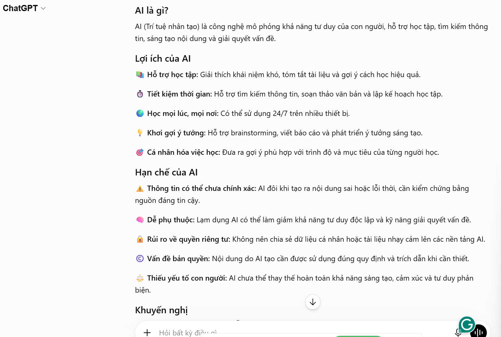
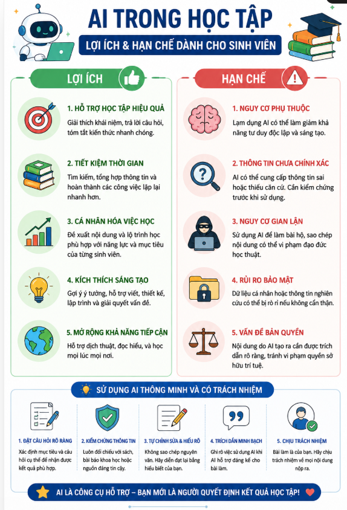

Họ và tên: Vũ Đan Ngọc Vân Khánh
MSSV: 25041670
Khoa: Ngôn ngữ và Văn hóa Trung Quốc
Trường: Đại học Ngoại ngữ, ĐHQGHN
1. Giới thiệu dự án
Trong thời đại công nghệ số, trí tuệ nhân tạo (AI) đang trở thành công cụ hỗ trợ mạnh mẽ cho học tập và sáng tạo nội dung. Dự án này thực hiện việc thiết kế một infographic về AI hỗ trợ học tập cho sinh viên bằng cách kết hợp nhiều công cụ AI tạo sinh khác nhau.
Mục tiêu của dự án:
Tìm hiểu cách AI hỗ trợ quy trình sáng tạo nội dung.
So sánh hiệu quả của các công cụ AI khác nhau.
Kết hợp đầu ra AI với tư duy sáng tạo cá nhân để tạo sản phẩm hoàn chỉnh.
Sản phẩm cuối cùng gồm:
Một infographic hoàn chỉnh.
Nội dung mô tả đi kèm.
Các phiên bản chỉnh sửa trung gian.
Ảnh minh họa quá trình sử dụng AI.
2. Các công cụ AI đã sử dụng
2.1. Công cụ AI tạo văn bản
ChatGPT
Dùng để:
+Lên ý tưởng nội dung infographic.
+Viết tiêu đề và mô tả.
+Tóm tắt thông tin ngắn gọn.
Google Gemini
Dùng để:
+Gợi ý cách trình bày nội dung.
+Đề xuất các số liệu và ví dụ minh họa.
2.2. Công cụ AI tạo hình ảnh
DALL·E
Dùng để:
+Tạo hình minh họa sinh viên học tập cùng AI.
+Tạo icon công nghệ hiện đại.
2.3. Công cụ AI hỗ trợ thiết kế
Canva AI
Dùng để:
+Thiết kế infographic hoàn chỉnh.
+Tạo bố cục và phối màu.
+Chỉnh sửa hình ảnh AI tạo ra.
3. Quá trình sử dụng AI
3.1. Bước 1 – Tạo nội dung bằng AI văn bản
Prompt sử dụng trên ChatGPT:
“Viết nội dung ngắn gọn cho infographic về lợi ích và hạn chế của AI trong học tập dành cho sinh viên.”
Kết quả nhận được
Chat GPT tạo:
5 lợi ích chính của AI.
3 hạn chế phổ biến.
Các câu slogan ngắn.
Các khuyến nghị khi sử dụng AI

Sau khi nhận kết quả, tinh chỉnh đầu ra nội dung cho phù hợp
3.2. Bước 2 – Tạo hình ảnh bằng AI
Prompt sử dụng trên DALL·E
“A modern student using AI tools for studying, digital illustration style, colorful infographic elements.”
AI tạo hình ảnh:

Sau khi nhận được kết quả, tinh chỉnh màu sắc phù hợp với chủ đề công nghệ, chỉnh sửa cá nhân, cắt ghép thêm icon học tập, thay đổi bố cục để phù hợp infographic.
Chỉnh màu đồng bộ với tổng thiết kế.
3.3. Bước 3 – Thiết kế infographic
Sử dụng Canva AI để:
Chọn template infographic.
Thêm nội dung từ ChatGPT.
Tích hợp hình ảnh từ DALL·E.
Điều chỉnh font chữ và màu sắc.
4. So sánh các công cụ AI
Công cụ AI |
Mục đích sử dụng |
Điểm mạnh |
Hạn chế |
|---|---|---|---|
ChatGPT |
Tạo nội dung văn bản |
Viết nội dung nhanh, mạch lạc, dễ chỉnh sửa theo yêu cầu; hỗ trợ tóm tắt, lập dàn ý và diễn đạt rõ ràng. |
Đôi khi câu trả lời dài hoặc mang tính khái quát; cần người dùng kiểm chứng thông tin và chỉnh sửa để phù hợp với mục đích sử dụng. |
Google Gemini |
Hỗ trợ tìm ý tưởng và bổ sung thông tin |
Đề xuất nhiều góc nhìn và ý tưởng đa dạng; hỗ trợ mở rộng nội dung từ nhiều khía cạnh khác nhau. |
Một số thông tin còn chung chung hoặc chưa đủ chi tiết; cần kiểm tra lại với các nguồn đáng tin cậy. |
DALL·E |
Tạo hình ảnh minh họa |
Tạo hình ảnh sáng tạo, chất lượng cao từ mô tả bằng văn bản; phong cách đa dạng, phù hợp với nhiều chủ đề. |
Khó kiểm soát hoàn toàn các chi tiết nhỏ; đôi khi cần chỉnh sửa hoặc tạo lại nhiều lần để đạt kết quả mong muốn. |
Canva AI |
Thiết kế infographic và trình bày |
Giao diện trực quan, dễ sử dụng; tự động gợi ý bố cục, màu sắc và biểu tượng, giúp tiết kiệm thời gian thiết kế. |
Một số mẫu (template) có bố cục tương tự nhau; cần tùy chỉnh thêm để tạo dấu ấn cá nhân và tránh trùng lặp. |
Phân tích
Mỗi công cụ AI có vai trò khác nhau trong quy trình sáng tạo. ChatGPT hỗ trợ mạnh về nội dung văn bản, trong khi DALL·E tạo hình ảnh trực quan và Canva AI giúp hoàn thiện sản phẩm cuối cùng.
Tuy nhiên, AI vẫn chưa thể thay thế hoàn toàn con người. Các nội dung AI tạo ra đôi khi chưa phù hợp với đối tượng mục tiêu hoặc thiếu tính cá nhân hóa. Vì vậy, người dùng cần chỉnh sửa và sáng tạo thêm để sản phẩm có chất lượng tốt hơn.
Trong dự án này, khoảng 40% nội dung đến từ AI và 60% là chỉnh sửa, lựa chọn và sáng tạo cá nhân.
5. Sản phẩm cuối cùng
Nội dung infographic gồm:
Tiêu đề: “AI hỗ trợ học tập cho sinh viên”
Các phần chính
AI là gì?
Lợi ích của AI trong học tập.
Các công cụ AI phổ biến.
Những lưu ý khi sử dụng AI.
Kết luận và thông điệp.
Thông điệp chính: “AI là công cụ hỗ trợ học tập hiệu quả nếu được sử dụng đúng cách.”
6. Vai trò của AI trong quá trình sáng tạo
AI đóng vai trò hỗ trợ rất lớn trong dự án này. Nhờ AI, quá trình tìm ý tưởng, viết nội dung và thiết kế được thực hiện nhanh hơn so với cách làm truyền thống.
Những phần AI làm tốt:
Tạo nội dung nhanh chóng.
Gợi ý ý tưởng sáng tạo.
Tạo hình ảnh đẹp và hiện đại.
Hỗ trợ thiết kế trực quan.
Những hạn chế của AI
Một số nội dung chưa thật sự chính xác.
Hình ảnh AI đôi khi bị lỗi chi tiết.
Nội dung tạo ra còn thiếu cảm xúc và dấu ấn cá nhân.
AI thay đổi quy trình sáng tạo như thế nào?
Trước đây, quá trình thiết kế nội dung cần nhiều thời gian để tìm ý tưởng và chỉnh sửa. Khi sử dụng AI:
Việc lên ý tưởng nhanh hơn.
Có nhiều lựa chọn nội dung hơn.
Giảm thời gian thiết kế và chỉnh sửa.
Tuy nhiên, người dùng vẫn cần tư duy phản biện để đánh giá và chọn lọc đầu ra AI phù hợp.
7. Các vấn đề đạo đức cần cân nhắc
Việc sử dụng AI trong sáng tạo nội dung cũng đặt ra nhiều vấn đề đạo đức:
Nguy cơ đạo văn nếu sao chép toàn bộ nội dung AI.
Khả năng AI tạo thông tin sai lệch.
Vấn đề bản quyền hình ảnh do AI tạo ra.
Sự phụ thuộc quá mức vào AI có thể làm giảm khả năng sáng tạo cá nhân.
Do đó, AI nên được xem là công cụ hỗ trợ thay vì thay thế hoàn toàn con người trong quá trình sáng tạo.
8. Kết luận
Thông qua dự án này, em đã hiểu rõ hơn về cách sử dụng các công cụ AI tạo sinh trong sáng tạo nội dung đa phương tiện. Việc kết hợp AI với tư duy sáng tạo cá nhân giúp nâng cao hiệu quả làm việc, tiết kiệm thời gian và tạo ra sản phẩm có chất lượng tốt hơn.
Dự án cũng giúp em nhận thức rõ tầm quan trọng của việc sử dụng AI có trách nhiệm, biết kiểm chứng thông tin và duy trì vai trò sáng tạo của con người trong thời đại công nghệ số.